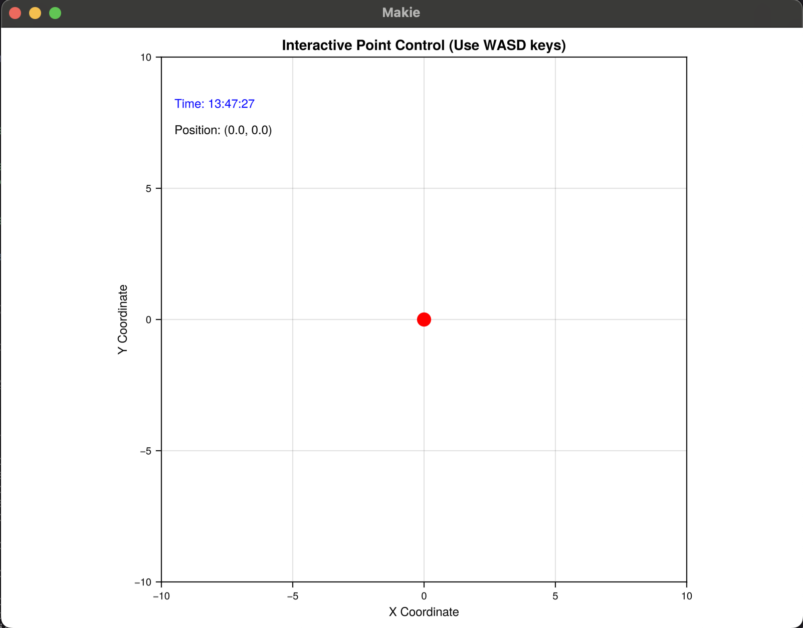

JuliaTestRocket
An interactive Julia application that displays a controllable point using Makie.jl visualization. Control the point's movement using WASD keys with real-time coordinate updates and smooth continuous movement. Built with a backend-agnostic architecture following modern Makie.jl best practices.

Features
- Interactive Point Visualization: Real-time point rendering using Makie.jl
- Backend-Agnostic Architecture: Works with GLMakie, CairoMakie, or WGLMakie
- WASD Keyboard Controls: Intuitive movement controls with immediate response
- Real-time Coordinate Display: Live coordinate updates as the point moves
- Smooth Continuous Movement: Fluid movement while keys are held down
- Diagonal Movement Support: Natural diagonal movement when multiple keys are pressed
- Robust Error Handling: Comprehensive error handling for graphics and input issues
- Performance Optimized: Efficient rendering and input processing
- CI/CD Ready: Comprehensive test suite with backend-specific testing strategies
Quick Start
# First, activate your preferred Makie backend
using GLMakie # or CairoMakie, WGLMakie
GLMakie.activate!()
# Then use PointController
using PointController
run_point_controller()Installation
using Pkg
Pkg.add(url="https://github.com/bakulev/JuliaTestRocket")Or clone the repository:
git clone https://github.com/bakulev/JuliaTestRocket.git
cd JuliaTestRocket
julia --project=. -e "using Pkg; Pkg.instantiate()"System Requirements
- Julia: Version 1.10 or higher
- For interactive graphics: OpenGL 3.3+ compatible graphics card and drivers
- For headless operation: No graphics hardware required